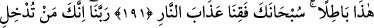
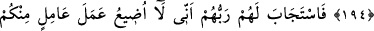
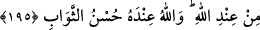

AKL-I SELÎM SÂHİPLERİ
190. Göklerin ve yerin yaratılışında, gece ile gündüzün birbiri ardınca gelip
gidişinde akl-ı selîm sahipleri için gerçekten açık ibretler vardır.
191. Onlar, ayakta dururken, otururken, yanları üzerine yatarken (her vakit)
Allah’ı anarlar, göklerin ve yerin yaratılışı hakkında derin derin düşünürler (ve
şöyle derler:) Rabbimiz! Sen bunu boşuna yaratmadın. Seni tesbih ederiz. Bizi
cehennem azabından koru!
192. Ey Rabbimiz! Doğrusu sen, kimi cehenneme koyarsan, artık onu rüsvay
etmişsindir. Zâlimlerin hiç yardımcıları yoktur.
193. Ey Rabbimiz! Gerçek şu ki biz, “Rabbinize inanın!” diye îmana çağıran bir
dâvetçiyi (Peygamber’i, Kur’ân’ı) işittik, hemen îman ettik. Artık bizim
günahlarımızı bağışla, kötülüklerimizi ört, ruhumuzu sâlihlerle beraber al, ey
Rabbimiz!
194. Rabbimiz! Bize, peygamberlerin vasıtasıyla vâdettiklerini de ikrâm et ve
kıyâmet gününde bizi rezil-rüsvay etme; şüphesiz sen vâdinden caymazsın!
195. Bunun üzerine Rableri, onların duâlarını kabul etti. (Dedi ki:) Ben, erkek
olsun kadın olsun -ki hep birbirinizdensiniz- içinizden, çalışan hiçbir kimsenin